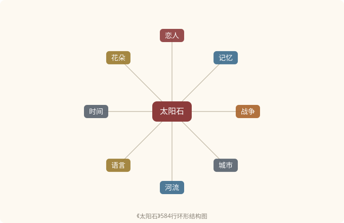

太阳石
一、基本信息
| 作者 | 帕斯 |
|---|---|
| 成书/出版 | 1957年出版（通说待核） Octavio Paz — Encyclopaedia Britannica（百科全书） |
| 国别/地区 | 墨西哥 |
| 时代 | 现当代 · 20世纪 |
| 体裁 | 长诗 |
| 语言 | 西班牙语 |

《太阳石》584行环形结构图（人物关系图）
二、创作背景
结构：584行（阿兹特克历法一年——通说待核）——单句流动的环形诗，首尾相接（通说待核）。
Britannica（Paz 条）：Piedra de sol (Sun Stone) 为其 notable works；受超现实主义、佛教与印度教影响（Britannica：Influenced by Marxism, Surrealism, existentialism, Buddhism, and Hinduism）。
三、内容脉络
单一长句：584行以冒号连接——'一株柳树生长着，一颗水珠滑落'（原文意，通说待核）——从夏日恋人的意象出发，流经记忆、战争、城市，回到起点：'一切在一朵花中'（原文意，待核）——环形闭合。
四、主要人物表
| 人物 | 身份 | 说明 |
|---|---|---|
| '我' | 诗人·恋人·见证者 | 以'我'贯穿584行的沉思 |
| '她' | 恋人 | 夏季与'流逝'的化身（通说） |
五、主题与艺术特点
- 时间的环形：过去-现在-未来在一行诗中循环（通说）。
- 爱的消失与重现：'她走了……一切又回来了'（通说）。
- 艺术特点：584行单句的'呼吸'节奏、超现实意象与墨西哥神话的交融。
六、影响与评论
- Britannica（Paz 条）：Piedra de sol (Sun Stone) 列于 notable works。
Octavio Paz — Encyclopaedia Britannica（百科全书） - 20世纪长诗的代表作（通说待核）。
Octavio Paz — Encyclopaedia Britannica（百科全书） - 中译：赵振江译（通说待核）。
Octavio Paz — Encyclopaedia Britannica（百科全书）
七、阅读建议
难点
- 584行单句——'一口气'读完的效果最佳。
- 阿兹特克历法与阿兹特克'太阳石'（历法石盘）的知识——注释。
- 赵振江译《太阳石》（人民文学出版社，通说待核）。
- 英译：Eliot Weinberger（通说待核）。
通读（'一口气'）→ 重读头尾两行（环形闭合）→ 配《孤独的迷宫》。
八、待核实
- 1957年出版（Los Libros del Balancín，通说待核）细节待核。
- 赵振江译本信息待核。
- 584行数字与阿兹特克历法对应（通说待核）待核。
本页主要来源
相关作品：二十首情诗和一支绝望的歌荒原达洛维夫人
帕斯的其他收录作品：太阳石